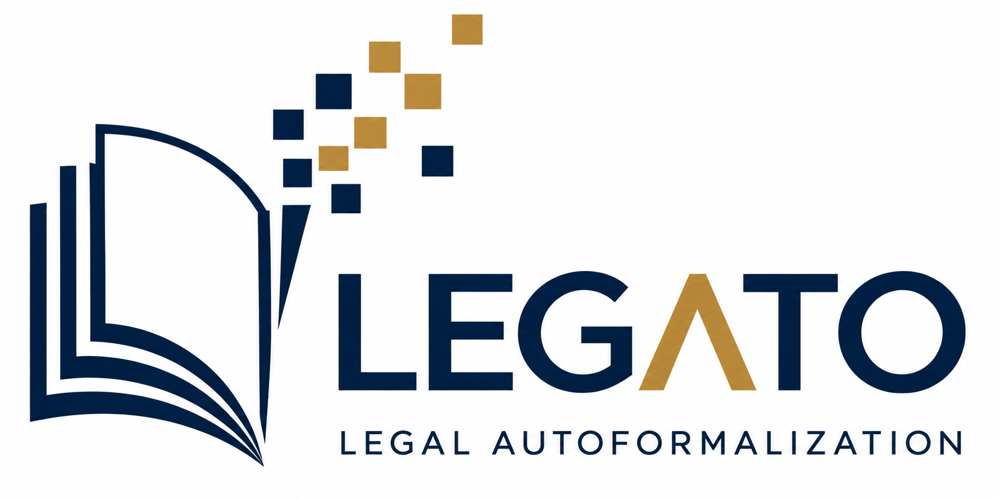

Legal Autoformalization (LEGATO Track)
The LEGATO Track of VLE-LEGATO 2026, associated with JURIX 2026
December 8, 2026
About the LEGATO Track
LEGATO 2026 is the legal autoformalization track of the combined VLE-LEGATO 2026 workshop, associated with JURIX 2026 on December 8, 2026, in Toulouse, France. LEGATO advances trustworthy legal autoformalization: the automatic and human-in-the-loop transformation of legal texts into formal representations, together with methods for validation, verification, benchmarking, and evaluation.
Aims and Scope
Formal representations of legal knowledge are a key enabler of automated legal reasoning. They support regulatory compliance checking, legal decision support, contract and policy analysis, and normative reasoning in autonomous and AI-based systems. Yet most legal knowledge is expressed in natural language, whereas reasoning systems typically require structured or symbolic representations. Converting legal texts into trustworthy formal representations therefore remains a major bottleneck in AI and Law.
Recent advances in natural language processing (NLP), particularly large language models (LLMs), have created new opportunities for automating legal formalization. However, ensuring that automatically generated representations faithfully preserve legal meaning and support reliable reasoning remains a significant challenge. Addressing this challenge requires moving beyond the generation of formal representations toward systematic approaches that ensure their correctness, reliability, and practical usability.
A central focus of LEGATO is the trustworthiness of automatically generated legal formalizations. This includes investigating how to assess semantic faithfulness, identify errors and omissions, detect unintended logical consequences, and develop systematic approaches for evaluating and improving formal representations. LEGATO also recognizes the importance of human expertise, particularly in addressing legal ambiguity, interpretive choices, and complex relationships among legal provisions.
LEGATO seeks to bring together researchers and practitioners from AI and Law, NLP, knowledge representation and reasoning, formal methods, automated reasoning, software engineering, and human–computer interaction. By encouraging interdisciplinary exchange, the workshop aims to foster new methodologies, evaluation frameworks, benchmarks, and practical tools for reliable legal autoformalization.
Topics of Interest
Topics include, but are not limited to:
- Automatic and semi-automatic extraction, formalization, and representation of norms from statutes, regulations, contracts, judgments, policies, and other sources
- LLM-based, neuro-symbolic, rule-based, and ontology-based approaches to normative representation
- Validation of source faithfulness, including conditions, exceptions, cross-references, and temporal scope
- Formal verification, testing, counterexample generation, and legal debugging
- Semantic and behavioural equivalence of alternative normative representations
- Datasets, shared tasks, benchmarks, evaluation metrics, and reproducibility
- Ambiguity, uncertainty, implicit assumptions, and alternative normative interpretations
- Human-in-the-loop workflows, interfaces, and expert feedback
- Traceability, versioning, maintenance, and governance of formal legal knowledge
- Applications to compliance, decision support, and autonomous or AI-based systems
Important Dates
Submission deadline: November 10, 2026( AOE )
Camera-ready due: November 27, 2026( AOE )
Submission Guidelines
We welcome and encourage the submission of high quality, original papers, which are not simultaneously submitted for publication elsewhere.
Submissions must follow the JURIX 2026 formatting requirements, using the styles and guidelines provided in the
IOS Press Instructions for Authors.
Papers must be prepared for single-blind peer review. Author names and affiliations should therefore be included in the submission.
All submissions must be in PDF format and must not exceed 10 pages of main content, with up to 3 additional pages allowed for acknowledgements and references.
Authors using Microsoft Word must follow the same formatting requirements and convert their papers to PDF before submission.
Submissions must be made through Easychair:
https://easychair.org/conferences/?conf=legato2026
For each accepted paper, at least one author must register for the workshop before submitting the camera-ready version and present the paper at the workshop. Papers that do not meet these requirements will not be included in the proceedings.
Workshop Organizers
Ken Satoh, Center for Juris-Informatics, ROIS-DS, JapanNils Holzenberger, Télécom Paris, France
Georg Borges, Saarland University, Germany
May Myo Zin, Center for Juris-Informatics, ROIS-DS, Japan
Wachara Fungwacharakorn, Center for Juris-Informatics, ROIS-DS, Japan
Program Committee Members
Michał Araszkiewicz, Jagiellonian University, Poland
Randy Goebel, University of Alberta, Canada
Satoshi Tojo, Asia University, Japan
Katsumi Nitta, Center for Juris-Informatics, Japan
Yufan Cai, National University of Singapore, Singapore
Anelia Kurteva, University of Birmingham, United Kingdom
Guido Governatori, Central Queensland University, Australia
Makoto Nakamura, Niigata Institute of Technology, Japan
Adam Wyner, Swansea University, United Kingdom
Davide Liga, University of Luxembourg, Luxembourg
María Navas-Loro, Universidad Politécnica de Madrid, Spain
Le-Minh Nguyen, Japan Advanced Institute of Science and Technology, Japan
Yuntao Kong, National Institute of Informatics, Japan
Ha-Thanh Nguyen, VinUniversity, Vietnam
Minh-Phuong Nguyen, Japan Advanced Institute of Science and Technology, Japan
Giovanni Sileno, University of Amsterdam, Netherlands
Livio Robaldo, Swansea University, United Kingdom
Sabine Wehnert, Ruhr University Bochum / Otto von Guericke University Magdeburg, Germany
Diogo Campos Sasdelli, University for Continuing Education Krems, Austria
Zhe Hou, Griffith University, Australia
Galileo Sartor, Swansea University, United Kingdom
For inquiries concerning the workshop, please contact May Myo Zin: maymyozin@nii.ac.jp